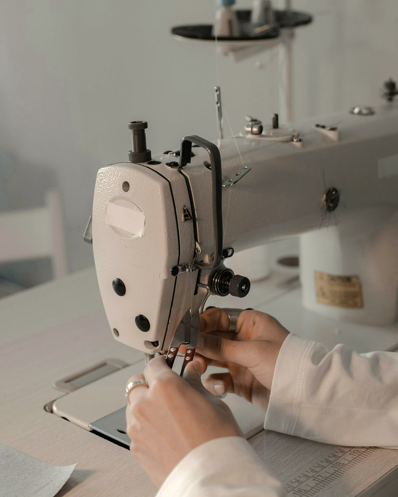
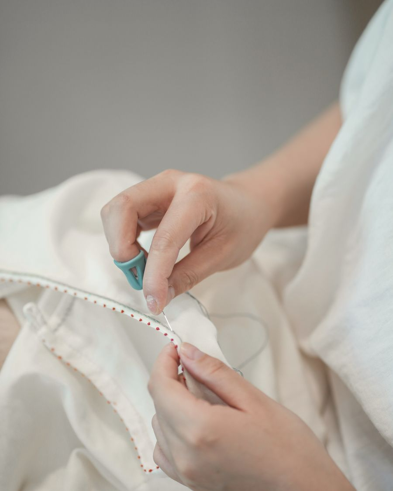
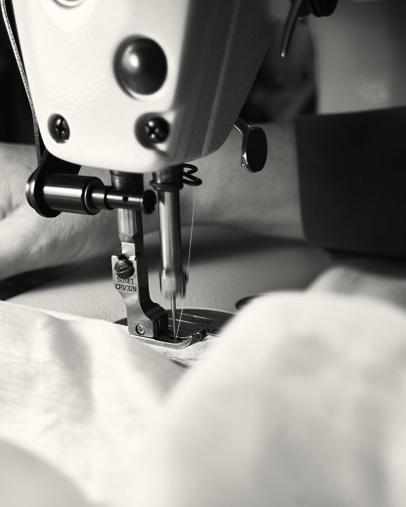
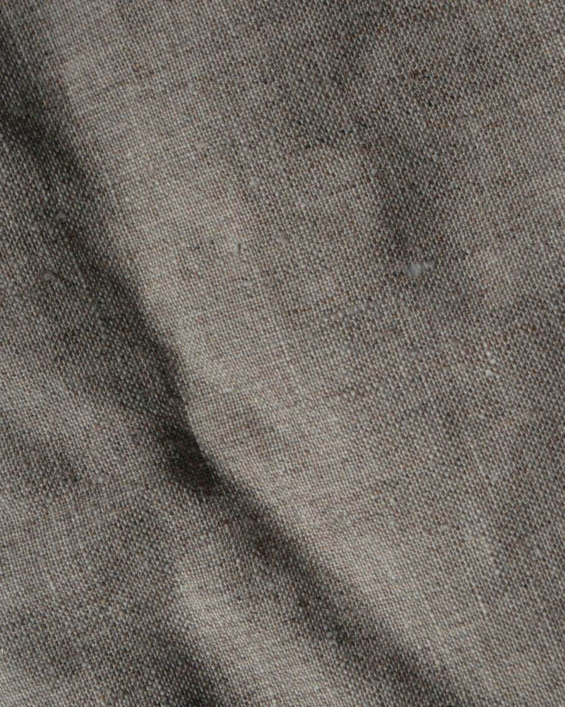
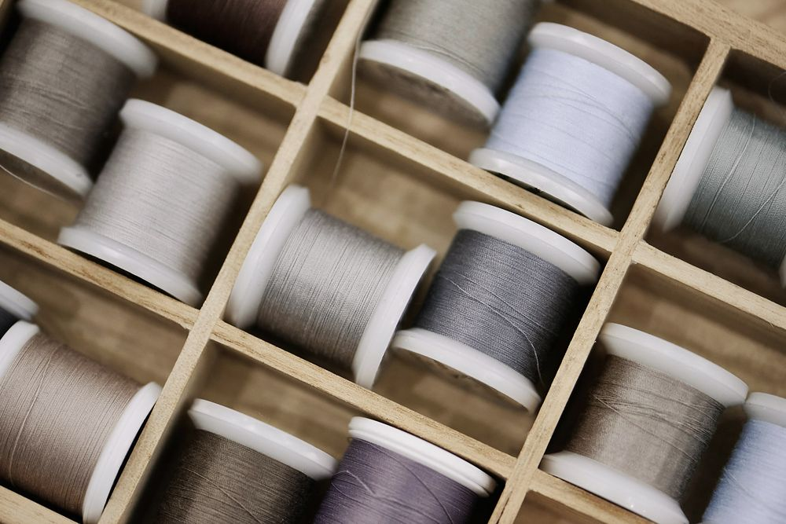

Tarina
Niisi tekee pellavapaitoja. Meitä on neljä, ja jokainen paita leikataan ja ommellaan samassa 86 neliön ateljeessa Vallilassa.

Iida Rantala ompeli ensimmäiset 40 pellavapaitaa syksyllä 2019 kotonaan Alppilassa ja myi ne kahdessa viikossa. Kangas oli tilattu Liettuasta 50 metrin rullana, joka ei mahtunut hissiin. Se kannettiin viidenteen kerrokseen portaita.
Vuonna 2021 Iida ja ompelija Heli Aaltonen vuokrasivat ateljeen Loimikadun vanhasta kirjapainotalosta. Leikkuupöytä on 4,2 metriä pitkä. Se koottiin paikan päällä, koska valmiina se ei olisi mahtunut ovesta.
Nyt Iida tekee kaavat ja leikkaa. Heli ja Sara Mäki ompelevat. Joonas Lind pakkaa tilaukset ja vastaa sähköposteihin kolmena päivänä viikossa, joten vastaus voi joskus viipyä vuorokauden.

- Perustettu
- 2019, Helsinki
- Ateljee
- Loimikatu 4 B, 86 m²
- Väki
- 4 henkeä, joista 2 ompelijaa
- Mallit
- 4 lyhythihaista pellavapaitaa
- Erät
- Noin 40 paitaa mallia kohden
- Pellava
- Kudottu Liettuassa, esipesty


Miksi vain paitoja
Ensimmäisinä vuosina teimme myös housuja. Ne myivät, mutta kaavoja ja kankaita oli liikaa kahdelle ompelijalle. Vuodesta 2023 olemme tehneet vain lyhythihaisia pellavapaitoja, ja malleja on neljä.
Kutakin mallia ommellaan noin 40 kappaleen erissä. Kun koko loppuu, leikkaamme uuden erän. Yhden paidan ompelemiseen menee noin kaksi ja puoli tuntia, napinlävet mukaan lukien.
Pellava
Kangas kudotaan Liettuassa, ja se pestään ennen leikkuuta. Siksi valmis paita kutistuu kotona pesussa enintään noin 2 %. Käytämme kolmea kangasta: harmaata ja sinistä melanssia, tummansinistä lankavärjättyä ja värjäämätöntä luonnonvalkoista.
Jos sauma aukeaa ensimmäisen vuoden aikana, korjaamme sen maksutta. Vanhempiakin Niisin paitoja korjataan, kunhan ne tuodaan ateljeelle torstaina.
Nimi
Niisi on kangaspuiden osa: lankasilmukka, jonka läpi loimilanka kulkee. Paidat on nimetty Helsingin edustan saarten mukaan. Lonna oli ensimmäinen.

Ateljee
Ateljee on auki torstaisin klo 12–18. Voit sovittaa kaikki neljä paitaa ja noutaa verkkotilauksen samalla. Muina päivinä sopimuksen mukaan, 048 571 2290.